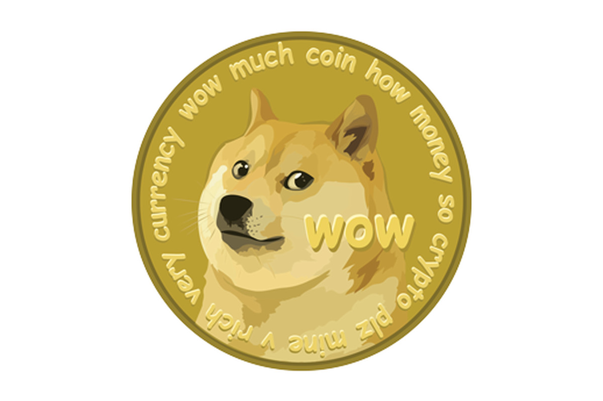

What is Dogecoin?
The official Dogecoin website describes dogecoin as "an open source peer-to-peer digital currency, favored by Shiba Inus worldwide." Unfortunately, I was not able to get any Shiba Inus to comment on this. Wikipedia describes it as a cryptocurrency with a "satirical nature" that some consider to be a "legitimate investment prospect". Dogecoin is an open-source cryptocurrency which has acquired a large following in recent times. It is secure and decentralised. It bears many similarities to other cryptocurrencies such as Bitcoin and Ethereum, although the main difference is that it is notably cheaper, and thus has a lower cost of entry. Most people find themselves buying Dogecoin to support the satire, but some have seriously invested in it, and allegedly made large profits. I will not bother referencing this as it is not reliable information, since it mainly comes from anonymous strangers posting on the Internet. It is not reliable; however, since Dogecoin has skyrocketed in value, as detailed later, some early adopters will definitely have made a very large profit.
Dogecoin Pricing
This has been very well documented recently, however, records get scarcer the closer one gets to the launch of
the technology. Despite some issues in obtaining information, a very clear trend is present.
Source: Yahoo Finance
As one can see, the price of Dogecoin has grown from next to nothing to $0.47453 on the 20/5/2021 at the very end of the graph. The gradient of the graph becomes steeper and steeper, until it is almost vertical at the end of the graph. Barely visible, there is a sharp dip in the price towards the end. This is due to Elon Musk referring to Dogecoin as a "hustle" in a Saturday Night Live interview[3]. The main takeaway from this should be that Dogecoin increased in price dramatically through May 2021, which means that there was more demand for the currency. Elon Musk had hyped it up with various tweets that month, and many were buying into it.
A closer look at the year leading up to the event is detailed here:
(apologies, but the graph is in an MM/DD/YY format)
Source: Coinbase
As shown in greater detail here, Dogecoin saw two massive spikes in price drawing near to May 2021, once where Elon Musk announced that he would make Dogecoin the first cryptocurrency on the moon and once in the buildup to Musk's Saturday Night Live appearance. As you can see, Dogecoin's performance is very much dependent on Musk's whims. The graph peaks at almost 80 cents before falling back down after the SNL interview.
People's opinion on Dogecoin
In this segment, I did my own research. I conducted both an online survey and a series of in-person
interviews to gather some opinions from various people. The online survey garnered some intruiging
information. This graph shows the percentage of people who have heard of cryptocurrency before.
Source: My own survey
This graph shows that 89.5% of people have heard of cryptocurrency before and, conversely, 10.5% of people have not. Now, out of the people who did know about cryptocurrency, this graph shows the people who have invested in it before.
Source: My own survey
As shown here, in contrast to the large amount of people who had heard of cryptocurrency, a very small number of people had actually invested it. This graph is unbiased on the assumption that people who have not heard of cryptocurrency have not invested in it. Only 11.8% of the people who had heard of crypto had invested in it before, and 88.2% had not. From this data, the conclusion can be drawn that the idea of cryptocurrency is widely-known; however, it is not appealing enough to consumers to warrant buying into it. The main problem is probably the cost of entry and the lack of service that accept cryptocurrency, athough these numbers are growing.
The in-person interviews I conducted focussed on the public's ability to read the movement of Dogecoin. Participants were given various past events and were asked to estimate what the impact on Dogecoin's price would be.
Source: My own interviews
As seen here, all participants got at least 5 answers right out of 8 questions (A right answer was counted if the participant answered in the correct cash flow direction). All participants were given the same questions. However, no participant could predict what the price would do 100% of the time. None of them had had in-depth experience in investing, so this was to be expected. This shows that the average person can read what Dogecoin will do, at least in retrospect. It is almost impossible to predict events such as Musk calling the currency a "hustle" on SNL. Participants were also asked what they would do to increase the price. Most mentioned a celebrity social media campaign in their responses. Additionally, when asked what they would do the decrease the price, they said the same thing. From this, the conclusion can be drawn that the public opinion is that Dogecoin is heavily reliant on celebrities and popular figures.
Conclusion
|
From the data shown so far, people know about cryptocurrencies but are not buying them and seem to be able to predict a lot about them. Also, the price is increasing dramatically and large profits have been made. Despit this, people do not want to invest, due most likely to the large cost of entry and lack of practical application. This is where Dogecoin could solve some problems. Its low price means that it is easy to buy whole coins, instead of having to buy parts of coins, making the barrier to entry much lower. There is also a supportive community, albeit a somewhat sarcastic one, which helps new investors. Finally, the lack of uses for Dogecoin is solved by the fact that, realistically, you aren't going to buy Dogecoin to spend it, are you? Thus, while Dogecoin is not as advanced as Ethereum or Bitcoin, it could be a great currency for those looking to dip their toes into the pool that is cryptocurrency without the risk of too much loss. |
 |